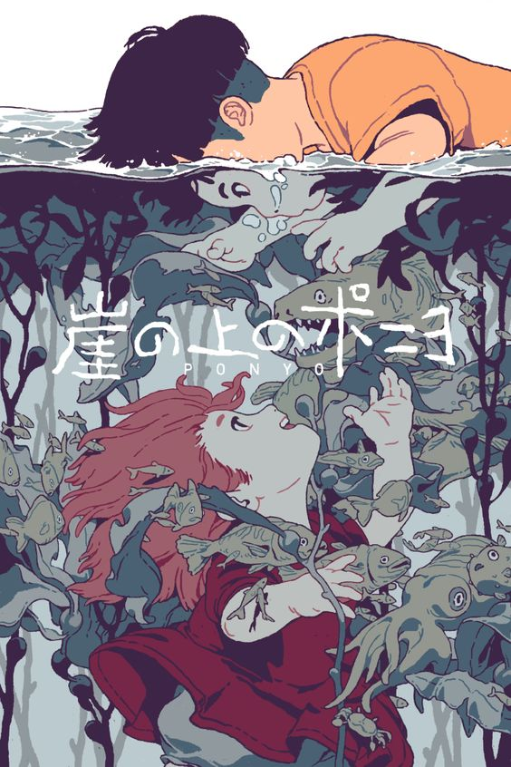

HOME

Ponyo on the Cliff
《崖上的波妞》
(2008)
《崖上的波妞》是由宫崎骏导演、编剧及吉卜力工作室制作的长篇动画电影，在2008年7月19日在日本首映。《崖上的波妞》讲述大海中的小金鱼偷偷离开她的家，乘着水母来到外界的世界却不慎卡在海洋垃圾里的玻璃罐内，这时救她的是一个小男孩“宗介”。宗介将金鱼救出后把她取名为“波妞”并下定决心要保护她。喜欢上宗介的波妞，开始想要变成人类的故事。
Distributor:
Studio Ghibli